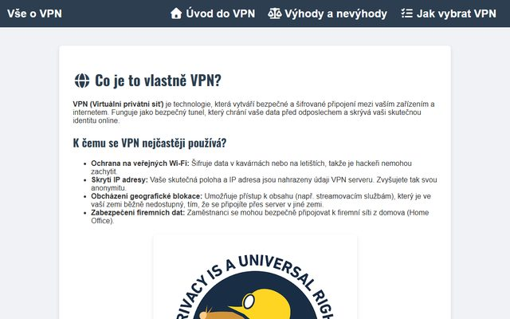

Vše o VPN
Web o třech stránkách, který vysvětluje, co je VPN, jaké má výhody a jak ji vybrat.
Učím se tvořit webové stránky v HTML a CSS. Tady najdeš moje projekty.

Web o třech stránkách, který vysvětluje, co je VPN, jaké má výhody a jak ji vybrat.
Zdrojový kód všech mých projektů najdeš na GitHubu.
github.com/Vesely-Petr